전기기사 (2017-05-07 기출문제)
1과목: 전기자기학
1. 원통 좌표계에서 전류밀도 j=Kr2az[A/m2]일 때 암페어의 법칙을 사용한 자계의 세기 H[AT/m]는? (단, K는 상수이다.)
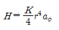
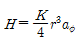
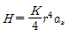
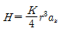
(정답률: 54%)

2. 최대 정전용량 C0[F]인 그림과 같은 콘덴서의 정전용량이 각도에 비례하여 변화한다고 한다. 이 콘덴서를 전압 V[V]로 충전하였을 때 회전자에 작용하는 토크는?
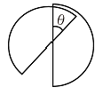
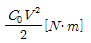
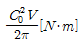
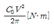
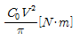
(정답률: 69%)
3. 내부도체 반지름이 10mm, 외부도체의 내반지름이 20mm인 동축케이블에서 내부도체 표면에 전류 I가 흐르고, 얇은 외부도체에 반대 방향인 전류가 흐를 때 단위 길이당 외부 인덕턴스는 약 몇 H/m인가?
- 0.27×10-7
- 1.39×10-7
- 2.03×10-7
- 2.78×10-7
(정답률: 62%)
4. 무한 평면에 일정한 전류가 표면에 한 방향으로 흐르고 있다. 평면으로부터 r만큼 떨어진 점과 2r만큼 떨어진 점과의 자계의 비는 얼마인가?
- 1
- √2
- 2
- 4
(정답률: 44%)
5. 어떤 공간의 비유전율은 2이고, 전위
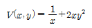
이라고 할 때 점 (1/2,2)에서의 전하밀도 p는 약 몇 pC/m3인가?- -20
- -40
- -160
- -320
(정답률: 52%)
6. 그림과 같은 히스테리시스 루프를 가진 철심이 강한 평등자계에 의해 매초 60Hz로 자화할 경우 히스테리시스 손실은 몇 W인가? (단, 철심의 체적은 20cm3,Bt=5Wb/m2, HC=2AT/m이다.)
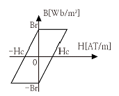
- 1.2×10-2
- 2.4×10-2
- 3.6×10-2
- 4.8×10-2
(정답률: 46%)
7. 그림과 같이 직각 코일이
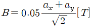
인 자계에 위치하고 있다. 코일에 5A 전류가 흐를 때 z축에서의 토크는 약 몇 N ㆍ m 인가?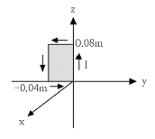
- 2.66×10-4ax
- 5.66×10-4ax
- 2.66×10-4az
- 5.66×10-4az
(정답률: 58%)
8. 그림과 같이 무한평면 도체 앞 a[m] 거리에 점전하 Q[C]가 있다. 점 0에서 x[m]인 P점의 전하밀도 σ[C/m2]는?
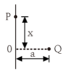
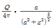
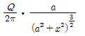
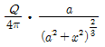
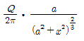
(정답률: 61%)
9. 유전율 ℇ=8.855×10-12[F/m]인 진공 중을 전자파가 전파할 때 진공 중의 투자율[H/m]은?
- 7.58×10-5
- 7.58×10-7
- 12.56×10-5
- 12.56×10-7
(정답률: 65%)
10. 막대자석 위쪽에 동축 도체 원판을 놓고 회로의 한 끝은 원판의 주변에 접촉시켜 회전하도록 해 놓은 그림과 같은 패러데이 원판 실험을 할 때 검류계에 전류가 흐르지 않는 경우는?
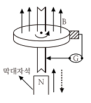
- 자석만을 일정한 방향으로 회전시킬 때
- 원판만을 일정한 방향으로 회전시킬 때
- 자석을 축 방향으로 전진시킨 후 후퇴시킬 때
- 원판과 자석을 동시에 같은 방향, 같은 속도로 회전시킬 때
(정답률: 81%)
11. 점전하에 의한 전계의 세기[V/m]를 나타내는 식은? (단, r은 거리, Q는 전하량, λ는 선전하 밀도, σ는 표면전하 밀도이다.)
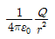
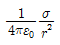
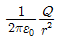
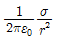
(정답률: 76%)
12. 유전율 ℇ, 투자율 μ인 매질에서의 전파속도 v는?
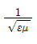
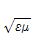
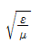
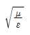
(정답률: 77%)
13. 전계 E[V/m], 전속밀도 D[C/m2], 유전율 ℇ=ℇ0ℇS[F/m], 분극의 세기 P[C/m2] 사이의 관계는?
- P=D+ℇ0E
- P=D-ℇ0E
- P=D-E/ℇ0
- P=D+E/ℇ0
(정답률: 80%)
14. 서로 결합하고 있는 두 코일 C1과 C2의 자기인덕턴스가 각각 LC1, LC2라고 한다. 이 둘을 직렬로 연결하여 합성인덕턴스 값을 얻은 후 두 코일간 상호인덕턴스의 크기(M)를 얻고자 한다. 직렬로 연결할 때, 두 코일간 자속이 서로 가해져서 보강되는 방향의 합성인덕턴스의 값이 L1 서로 상쇄되는 방향의 합성 인덕턴스의 값이 L2일 때, 다음 중 알맞은 식은?
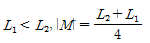
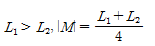
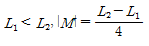
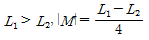
(정답률: 60%)
15. 정전용량이 C0[F]인 평행판 공기 콘덴서가 있다. 이것의 극판에 평행으로 판간격 d[m]의 1/2 두께인 유리판을 삽입하였을때의 정전용량[F]은? (단, 유리판의 유전율은 ℇ[F/m]이라 한다.)
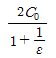
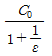
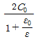
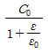
(정답률: 55%)
16. 벡터 포텐샬
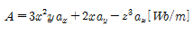
일 때의 자계의 세기 H[A/m]는? (단, μ는 투자율이라 한다.)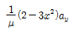
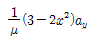
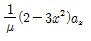
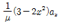
(정답률: 58%)
17. 자기회로에서 자기 저항의 관계로 옳은 것은?
- 자기회로의 길이에 비례
- 자기회로의 단면적에 비례
- 자성체의 비투자율에 비례
- 자성체의 비투자율의 제곱에 비례
(정답률: 80%)
18. 그림과 같은 길이가 1m인 동축 원통 사이의 정전용량[F/m]]은?
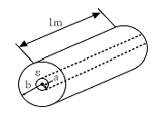
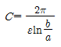
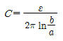
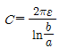
- 문제오류로 보기가 없습니다.
(정답률: 81%)
19. 철심이 든 환상 솔레노이드의 권수는 500회, 평균 반지름은 10㎝, 철심의 단면적은 10cm2, 비투자율 4000이다. 이 환상 솔레노이드에 2A의 전류를 흘릴 때, 철심 내의 자속[Wb]은?
- 4×10-3
- 4×10-4
- 8×10-3
- 8×10-4
(정답률: 61%)
20. 그림과 같은 정방형관 단면의 격자점 ⑥의 전위를 반복법으로 구하면 약 몇 V 인가?
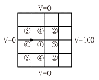
- 6.3
- 9.4
- 18.8
- 53.2
(정답률: 63%)
2과목: 전력공학
21. 동기조상기[A]와 전력용 콘덴서[B]를 비교한 것으로 옳은 것은?
- 시충전 : (A) 불가능, (B) 가능
- 전력 손실 : (A) 작다, (B) 크다
- 무효전력 조정 : (A) 계단적, (B) 연속적
- 무효전력 : (A) 진상·지상용, (B) 진상용
(정답률: 75%)
22. 어떤 공장의 소모 전력이 100kW이며, 이 부하의 역률이 0.6일 때, 역률을 0.9로 개선하기 위한 전력용 콘덴서의 용량은 약 몇 kVA인가?
- 75
- 80
- 85
- 90
(정답률: 70%)
23. 수력 발전소에서 사용되는 수차 중 15m 이하의 저낙차에 적합하여 조력 발전용으로 알맞은 수차는?
- 카플란 수차
- 펠톤 수차
- 프란시스 수차
- 튜블러 수차
(정답률: 63%)
24. 어떤 화력발전소에서 과열기 출구의 증기압이 169kg/cm2]이다. 이것은 약 몇 atm 인가?
- 127.1
- 163.6
- 1650
- 12850
(정답률: 56%)
25. 가공 송전선로를 가선할 때에는 하중 조건과 온도 조건을 고려하여 적당한 이도(dip)를 주도록 하여야 한다. 이도에 대한 설명으로 옳은 것은?
- 이도의 대소는 지지물의 높이를 좌우한다.
- 전선을 가선할 때 전선을 팽팽하게 하는 것을 이도가 크다고 한다.
- 이도가 작으면 전선이 좌우로 크게 흔들려서 다른 상의 전선에 접촉하여 위험하게 된다.
- 이도가 작으면 이에 비례하여 전선의 장력이 증가되며, 너무 작으면 전선 상호간이 꼬이게 된다.
(정답률: 74%)
26. 승압기에 의하여 전압 Ve에서 Vh로 승압할 때, 2차 정격전압 e, 자기용량 W인 단상 승압기가 공급할 수 있는 부하 용량은?
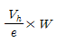
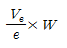
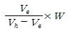
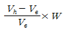
(정답률: 55%)
27. 일반적으로 부하의 역률을 저하시키는 원인은?
- 전등의 과부하
- 선로의 충전전류
- 유도 전동기의 경부하 운전
- 동기 전동기의 중부하 운전
(정답률: 63%)
28. 송전단 전압을 VS, 수전단 전압을 Vr, 선로의 리액턴스를 X라 할 때, 정상 시의 최대 송전전력의 개략적인 값은?
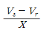
(정답률: 73%)
29. 가공지선의 설치 목적이 아닌 것은?
- 전압 강하의 방지
- 직격뢰에 대한 차폐
- 유도뢰에 대한 정전차폐
- 통신선에 대한 전자유도 장해 경감
(정답률: 67%)
30. 피뢰기가 방전을 개시할 때의 단자 전압의 순시값을 방전 개시 전압이라 한다. 방전 중의 단자 전압의 파고값을 무엇이라 하는가?
- 속류
- 제한 전압
- 기준충격 절연강도
- 상용주파 허용 단자 전압
(정답률: 65%)
31. 송전 계통의 한 부분이 그림과 같이 3상 변압기로 1차측은 △로, 2차측은 Y로 중성점이 접지되어 있을 경우, 1차측에 흐르는 영상전류는?
- 1차측 선로에서 ∞이다.
- 1차측 선로에서 반드시 0이다.
- 1차측 변압기 내부에서는 반드시 0이다.
- 1차측 변압기 내부와 1차측 선로에서 반드시 0이다.
(정답률: 59%)
32. 배전선로에 관한 설명으로 틀린 것은?
- 밸런서는 단상 2선식에 필요하다.
- 저압 뱅킹 방식은 전압 변동을 경감할 수 있다.
- 배전선로의 부하율이 F일 때 손실계수는 F와 F2의 사이의 값이다.
- 수용률이란 최대수용전력을 설비 용량으로 나눈 값을 퍼센트로 나타낸다.
(정답률: 74%)
33. 수차 발전기에 제동권선을 설치하는 주된 목적은?
- 정지시간 단축
- 회전력의 증가
- 과부하 내량의 증대
- 발전기의 안정도 증진
(정답률: 74%)
34. 3상 3선식 가공전선로에서 한 선의 저항은 15Ω, 리액턴스는 20Ω이고, 수전단 선간전압은 30kV, 부하역률은 0.8(뒤짐)이다. 전압강하율을 10%라 하면, 이 송전선로는 몇 kW까지 수전할 수 있는가?
- 2500
- 3000
- 3500
- 4000
(정답률: 42%)
35. 송전선로에서 사용하는 변압기 결선에 △결선이 포함되어 있는 이유는?
- 직류분의 제거
- 제 3고조파의 제거
- 제 5고조파의 제거
- 제 7고조파의 제거
(정답률: 77%)
36. 교류 송전 방식과 비교하여 직류 송전 방식의 설명이 아닌 것은?
- 전압 변동률이 양호하고 무효전력에 기인하는 전력 손실이 생기지 않는다.
- 안정도의 한계가 없으므로 송전용량을 높일 수 있다.
- 전력 변환기에서 고조파가 발생한다.
- 고전압, 대전류의 차단이 용이하다.
(정답률: 52%)
37. 전압 66000V, 주파수 60Hz, 길이 15km, 심선 1선당 작용 정전용량 0.3587㎌/㎞인 한 선당 지중 전선로의 3상 무부하 충전전류는 약 몇 A인가? (단, 정전용량 이외의 선로정수는 무시한다.)
- 62.5
- 68.2
- 73.6
- 77.3
(정답률: 63%)
38. 전력계통에서 사용되고 있는 GCB(Gas Circuit Breaker)용 가스는?
- N2가스
- SF6가스
- 알곤 가스
- 네온 가스
(정답률: 82%)
39. 차단기와 아크 소호원리가 바르지 않은 것은?
- OCB : 절연유에 분해 가스 흡부력 이용
- VCB : 공기 중 냉각에 의한 아크 소호
- ABB : 압축 공기를 아크에 불어 넣어서 차단
- MBB : 전자력을 이용하여 아크를 소호실내로 유도하여 냉각
(정답률: 75%)
40. 네트워크 배전 방식의 설명으로 옳지 않은 것은?
- 전압 변동이 적다.
- 배전 신뢰도가 높다.
- 전력손실이 감소한다.
- 인축의 접촉사고가 적어진다.
(정답률: 78%)
3과목: 전기기기
41. 정류회로에 사용되는 환류다이오드(free wheeling diode)에 대한 설명으로 틀린 것은?
- 순저항 부하의 경우 불필요하게 된다.
- 유도성 부하의 경우 불필요하게 된다.
- 환류 다이오드 동작 시 부하출력 전압은 약 0V가 된다.
- 유도성 부하의 경우 부하전류의 평활화에 유용하다.
(정답률: 56%)
42. 3상 변압기를 병렬운전하는 경우 불가능한 조합은?
- △-Y 와 Y-△
- △-△ 와 Y-Y
- △-Y 와 △-Y
- △-Y 와 △-△
(정답률: 79%)
43. 3상 직권 정류자 전동기에 중간(직렬)변압기가 쓰이고 있는 이유가 아닌 것은?
- 정류자 전압의 조정
- 회전자 상수의 감소
- 실효 권수비 선정 조정
- 경부하 때 속도의 이상 상승 방지
(정답률: 60%)
44. 직류 분권 전동기를 무부하로 운전 중 계자 회로에 단선이 생긴 경우 발생하는 현상으로 옳은 것은?
- 역전한다.
- 즉시 정지한다.
- 과속도로 되어 위험하다.
- 무부하이므로 서서히 정지한다.
(정답률: 65%)
45. 변압기에 있어서 부하와는 관계없이 자속만을 발생시키는 전류는?
- 1차 전류
- 자화 전류
- 여자 전류
- 철손 전류
(정답률: 68%)
46. 직류 전동기의 규약 효율을 나타낸 식으로 옳은 것은?
(정답률: 64%)
47. 직류 전동기에서 정속도 전동기라고 볼 수 있는 전동기는?
- 직권 전동기
- 타여자 전동기
- 화동 복권 전동기
- 차동 복권 전동기
(정답률: 57%)
48. 단상 유도전동기의 기동 방법 중 기동 토크가 가장 큰 것은?
- 반발 기동형
- 분상 기동형
- 세이딩 코일형
- 콘덴서 분상 기동형
(정답률: 76%)
49. 부흐홀츠 계전기에 대한 설명으로 틀린 것은?
- 오동작의 가능성이 많다.
- 전기적 신호로 동작한다.
- 변압기의 보호에 사용된다.
- 변압기의 주탱크와 콘서베이터를 연결하는 관중에 설치한다.
(정답률: 57%)
50. 직류기에서 정류코일의 자기 인덕턴스를 L이라 할 때 정류코일의 전류가 정류주기 TC 사이에 IC에서 -IC로 변한다면 정류 코일의 리액턴스 전압[V]의 평균값은?
(정답률: 66%)
51. 일반적인 전동기에 비하여 리니어 전동기의 장점이 아닌 것은?
- 구조가 간단하여 신뢰성이 높다.
- 마찰을 거치지 않고 추진력이 얻어진다.
- 원심력에 의한 가속제한이 없고 고속을 쉽게 얻을 수 있다.
- 기어, 벨트 등 동력 변환기구가 필요 없고 직접 원운동이 얻어진다.
(정답률: 63%)
52. 직류를 다른 전압의 직류로 변환하는 전력변환 기기는?
- 초퍼
- 인버터
- 사이클로 컨버터
- 브리지형 인버터
(정답률: 71%)
53. 와전류 손실을 패러데이 법칙으로 설명한 과정 중 틀린 것은?
- 와전류가 철심으로 흘러 발열
- 유기전압 발생으로 철심에 와전류가 흐름
- 시변 자속으로 강자성체 철심에 유기전압 발생
- 와전류 에너지 손실량은 전류 경로 크기에 반비례
(정답률: 61%)
54. 주파수가 정격보다 3% 감소하고 동시에 전압이 정격보다 3% 상승된 전원에서 운전되는 변압기가 있다. 철손이 에 비례한다면 이 변압기 철손은 정격 상태에 비하여 어떻게 달라지는가? (단, f : 주파수, Bm : 자속밀도 최대치이다.)
- 약 8.7% 증가
- 약 8.7% 감소
- 약 9.4% 증가
- 약 9.4% 감소
(정답률: 51%)
55. 교류정류자기에서 갭의 자속분포가 정현파로 øm=0.14Wb, P=2, a=1, Z=200, n=1200rpm인 경우 브러시 축이 자극축과 30°라면, 속도 기전력의 실효값 ES는 약 몇 V인가?
- 160
- 400
- 560
- 800
(정답률: 32%)
56. 역률 0.85의 부하 350kW에 50kW를 소비하는 동기 전동기를 병렬로 접속하여 합성 부하의 역률을 0.95로 개선하려면 진상 무효 전력은 약 몇 kVar인가?
- 68
- 72
- 80
- 85
(정답률: 42%)
57. 변압기의 무부하시험, 단락시험에서 구할 수 없는 것은?
- 철손
- 동손
- 절연 내력
- 전압 변동률
(정답률: 59%)
58. 3상 동기 발전기의 단락곡선이 직선으로 되는 이유는?
- 전기자 반작용으로
- 무부하 상태이므로
- 자기 포화가 있으므로
- 누설 리액턴스가 크므로
(정답률: 64%)
59. 정격출력 5000kVA, 정격전압 3.3kV, 동기 임피던스가 매상 1.8Ω인 3상 동기 발전기의 단락비는 약 얼마인가?
- 1.1
- 1.2
- 1.3
- 1.4
(정답률: 58%)
60. 동기기의 회전자에 의한 분류가 아닌 것은?
- 원통형
- 유도자형
- 회전 계자형
- 회전 전기자형
(정답률: 59%)
4과목: 회로이론 및 제어공학
61. 기준 입력과 주궤환량과의 차로서, 제어계의 동작을 일으키는 원인이 되는 신호는?
- 조작 신호
- 동작 신호
- 주궤환 신호
- 기준 입력 신호
(정답률: 64%)
62. 폐루프 전달함수 C(s)/R(s)가 다음과 같은 2차 제어계에 대한 설명 중 틀린 것은?
- 최대 오버슈트는
 이다.
이다. - 이 폐루프계의 특성 방정식은
 이다.
이다. - 이 계는 δ=0.1일 때 부족 제동된 상태에 있게 된다.
- δ값을 작게 할수록 제동은 많이 걸리게 되니 비교 안정도는 향상된다.
(정답률: 64%)
63. 3차인 이산치 시스템의 특성 방정식의 근이 –0.3, -0.2, +0.5로 주어져 있다. 이 시스템의 안정도는?
- 이 시스템은 안정한 시스템이다.
- 이 시스템은 불안정한 시스템이다.
- 이 시스템은 임계 안정한 시스템이다.
- 위 정보로서는 이 시스템의 안정도를 알 수 없다.
(정답률: 50%)
64. 다음의 특성 방정식을 Routh-Hurwitz 방법으로 안정도를 판별하고자 한다. 이때 안정도를 판별하기 위하여 가장 잘 해석한 것은 어느 것인가?
- s 평면의 우반면에 근은 없으나 불안정하다.
- s 평면의 우반면에 근이 1개 존재하여 불안정하다.
- s 평면의 우반면에 근이 2개 존재하여 불안정하다.
- s 평면의 우반면에 근이 3개 존재하여 불안정하다.
(정답률: 65%)
65. 전달함수 일 때 근궤적의 수는?
- 1
- 2
- 3
- 4
(정답률: 70%)
66. 다음의 미분 방정식을 신호 흐름 선도에 옳게 나타낸 것은? (단,로 표시한다.)
(정답률: 48%)
67. 다음 블록선도의 전체 전달함수가 1이 되기 위한 조건은?
(정답률: 52%)
68. 특성 방정식의 모든 근이 s 복소평면의 좌반면에 있으면 이 계는 어떠한가?
- 안정
- 준안정
- 불안정
- 조건부 안정
(정답률: 73%)
69. 그림의 회로는 어느 게이트(gate)에 해당되는가?
- OR
- AND
- NOT
- NOR
(정답률: 63%)
70. 전달함수가 로 주어진 시스템의 단위 임펄스 응답은?
- y(t)=1-t+e-t
- y(t)=1+t+e-t
- y(t)=t-1+e-t
- y(t)=t-1-e-t
(정답률: 46%)
71. 다음과 같은 회로망에서 영상파라미터(영상전달정수) θ는?
- 10
- 2
- 1
- 0
(정답률: 44%)
72. △결선된 대칭 3상 부하가 있다. 역률이 0.8(지상)이고 소비전력이 1800W이다. 선로의 저항 0.5Ω에서 발생하는 선로 손실이 50W이면 부하단자 전압[V]은?
- 627
- 525
- 326
- 225
(정답률: 50%)
73. E=40+j30[V]의 전압을 가하면 I=30+j10[A]의 전류가 흐르는 회로의 역률은?
- 0.949
- 0.831
- 0.764
- 0.651
(정답률: 52%)
74. 그림과 같은 회로에서 스위치 S를 닫았을 때, 과도분을 포함하지 않기 위한 R[Ω]은?
- 100
- 200
- 300
- 400
(정답률: 53%)
75. 분포정수 회로에서 직렬 임피던스를 Z, 병렬 어드미턴스를 Y라 할 때, 선로의 특성임피던스 Z0는?
- ZY
- √ZY
(정답률: 72%)
76. 다음과 같은 회로의 공진시 어드미턴스는?
- RL/C
- RC/L
- L/RC
- R/LC
(정답률: 46%)
77. 그림과 같은 회로에서 전류 I[A]는?
- 0.2
- 0.5
- 0.7
- 0.9
(정답률: 54%)
78. 로 주어졌을 때 F(s)의 역변환은?
- 1/2(1+et)
- 1/2(1+e-2t)
- 1/2(1-e-t)
- 1/2(1-e-2t)
(정답률: 52%)
79. 인 전압을 R-L 직렬 회로에 가할 때 제 5고조파 전류의 실효값은 약 몇 [A]인가? (단, R=12Ω, wL=1Ω 이다.)
- 10
- 15
- 20
- 25
(정답률: 67%)
80. 그림과 같은 파형의 전압 순시값은?
(정답률: 53%)
5과목: 전기설비기술기준 및 판단기준
81. 가공전선로의 지지물에 시설하는 지선에 관한 사항으로 옳은 것은?(오류 신고가 접수된 문제입니다. 반드시 정답과 해설을 확인하시기 바랍니다.)
- 소선은 지름 2.0mm 이상인 금속선을 사용한다.
- 도로를 횡단하여 시설하는 지선의 높이는 지표상 6.0m 이상이다.
- 지선의 안전율은 1.2 이상이고 허용 인장하중의 최저는 4.31kN으로 한다.
- 지선에 연선을 사용할 경우에는 소선은 3가닥 이상의 연선을 사용한다.
(정답률: 66%)
82. 옥내배선의 사용 전압이 400V 미만일 때 전광표시 장치 · 출퇴 표시등 기타이와 유사한 장치 또는 제어회로 등의 배선에 다심 케이블을 시설하는 경우 배선의 단면적은 몇mm2 이상인가?
- 0.75
- 1.5
- 1
- 2.5
(정답률: 52%)
83. 154kV 가공 송전선로를 제1종 특고압 보안공사로 할 때 사용되는 경동연선의 굵기는 몇 mm2 이상인가?(오류 신고가 접수된 문제입니다. 반드시 정답과 해설을 확인하시기 바랍니다.)
- 100
- 150
- 200
- 250
(정답률: 57%)
84. 일반적으로 저압 옥내 간선에서 분기하여 전기사용기계기구에 이르는 저압 옥내 전로는 저압 옥내간선과의 분기점에서 전선의 길이가 몇 m 이하인 곳에 개폐기 및 과전류 차단기를 시설하여야 하는가?
- 0.5
- 1.0
- 2.0
- 3.0
(정답률: 42%)
85. 전동기 과부하 보호 장치의 시설에서 전원측 전로에 시설한 배선용 차단기의 정격 전류가 몇 A 이하의 것이면 이 전로에 접속하는 단상 전동기에는 과부하 보호 장치를 생략할 수 있는가?
- 15
- 20
- 30
- 50
(정답률: 36%)
86. 사용전압이 35kV 이하인 특고압 가공전선과 가공 약전류 전선 등을 동일 지지물에 시설하는 경우, 특고압 가공전선로는 어떤 종류의 보안 공사로 하여야 하는가?
- 고압 보안공사
- 제1종 특고압 보안공사
- 제2종 특고압 보안공사
- 제3종 특고압 보안공사
(정답률: 52%)
87. 사용전압이 고압인 전로의 전선으로 사용할 수 없는 케이블은?
- MI 케이블
- 연피 케이블
- 비닐외장 케이블
- 폴리에틸렌 외장 케이블
(정답률: 48%)
88. 가로등, 경기장, 공장, 아파트 단지 등의 일반 조명을 위하여 시설하는 고압 방전등은 그 효율이 몇 lm/W 이상의 것이어야 하는가?(오류 신고가 접수된 문제입니다. 반드시 정답과 해설을 확인하시기 바랍니다.)
- 30
- 50
- 70
- 100
(정답률: 51%)
89. 제1종 접지공사의 접지선의 굵기는 공칭단면적 몇 mm2 이상의 연동선이어야 하는가?(관련 규정 개정전 문제로 여기서는 기존 정답인 3번을 누르면 정답 처리됩니다. 자세한 내용은 해설을 참고하세요.)
- 2.5
- 4.0
- 6.0
- 8.0
(정답률: 51%)
90. 금속관 공사에서 절연부싱을 사용하는 가장 주된 목적은?
- 관의 끝이 터지는 것을 방지
- 관내 해충 및 이물질 출입 방지
- 관의 단구에서 조영재의 접촉 방지
- 관의 단구에서 전선 피복의 손상 방지
(정답률: 61%)
91. 최대 사용전압이 3.3kV인 차단기 전로의 절연내력 시험전압은 몇 V인가?
- 3036
- 4125
- 4950
- 6600
(정답률: 53%)
92. 관·암거·기타 지중전선을 넣은 방호장치의 금속제부분(케이블을 지지하는 금구류는 제외한다.) 및 지중전선의 피복으로 사용하는 금속체에는 몇 종 접지공사를 하여야 하는가?(관련 규정 개정전 문제로 여기서는 기존 정답인 3번을 누르면 정답 처리됩니다. 자세한 내용은 해설을 참고하세요.)
- 제1종 접지공사
- 제2종 접지공사
- 제3종 접지공사
- 특별 제3종 접지공사
(정답률: 52%)
93. 가반형(이동형)의 용접전극을 사용하는 아크 용접장치를 시설할 때 용접 변압기의 1차측 전로의 대지전압은 몇 V 이하이어야 하는가?
- 200
- 250
- 300
- 600
(정답률: 71%)
94. 지중전선로를 직접 매설식에 의하여 차량 기타 중량물의 압력을 받을 우려가 있는 장소에 시설할 경우에는 그 매설 깊이를 최소 몇 m 이상으로 하여야 하는가?(관련 규정 개정전 문제로 여기서는 기존 정답인 2번을 누르면 정답 처리됩니다. 자세한 내용은 해설을 참고하세요.)
- 1
- 1.2
- 1.5
- 1.8
(정답률: 65%)
95. 사용전압이 22.9kV인 특고압 가공전선과 그 지지물·완금류·지주 또는 지선 사이의 이격거리는 몇 cm 이상이어야 하는가?
- 15
- 20
- 25
- 30
(정답률: 43%)
96. 건조한 장소로서 전개된 장소에 고압 옥내배선을 시설할 수 있는 공사방법은?
- 덕트 공사
- 금속관 공사
- 애자사용 공사
- 합성 수지관 공사
(정답률: 57%)
97. 제3종 접지공사를 하여야 할 곳은?(관련 규정 개정전 문제로 여기서는 기존 정답인 2번을 누르면 정답 처리됩니다. 자세한 내용은 해설을 참고하세요.)
- 고압용 변압기의 외함
- 고압의 계기용 변성기의 2차측 전로
- 특고압 계기용 변성기의 2차측 전로
- 특고압과 고압의 혼촉방지를 위한 방전장치
(정답률: 45%)
98. 전기철도에서 배류시설에 강제 배류기를 사용할 경우 시설방법에 대한 설명으로 틀린 것은?(오류 신고가 접수된 문제입니다. 반드시 정답과 해설을 확인하시기 바랍니다.)
- 강제 배류기용 전원장치의 변압기는 절연 변압기일 것
- 강제 배류기를 보호하기 위하여 적정한 과전류 차단기를 시설할 것
- 귀선에서 강제 배류기를 거쳐 금속제 지중 관로로 통하는 전류를 저지하는 구조로 할 것
- 강제 배류기는 제2종 접지공사를 한 금속제 외함 기타 견고한 함에 넣어 시설하거나 사람이 접촉할 우려가 없도록 시설할 것
(정답률: 37%)
99. 고압 가공전선에 케이블을 사용하는 경우 케이블을 조가용선에 행거로 시설하고자 할 때 행거의 간격은 몇 cm 이하로 하여야 하는가?
- 30
- 50
- 80
- 100
(정답률: 48%)
100. 고압 가공전선로의 지지물에 시설하는 통신선의 높이는 도로를 횡단하는 경우 교통에 지장을 줄 우려가 없다면 지표상 몇 m까지로 감할 수 있는가?
- 4
- 4.5
- 5
- 6
(정답률: 41%)